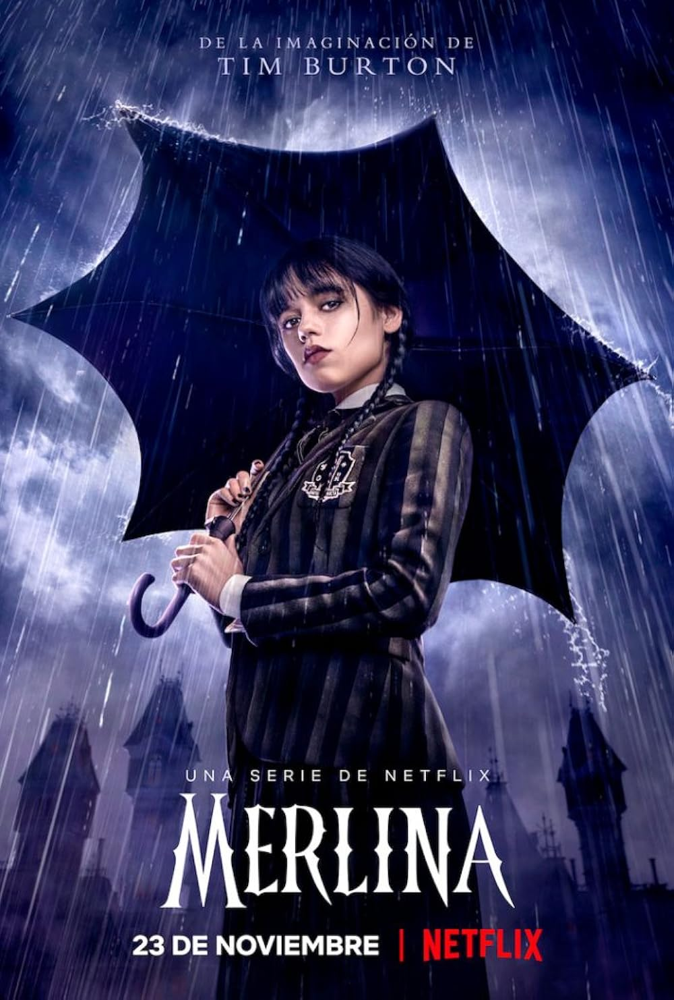
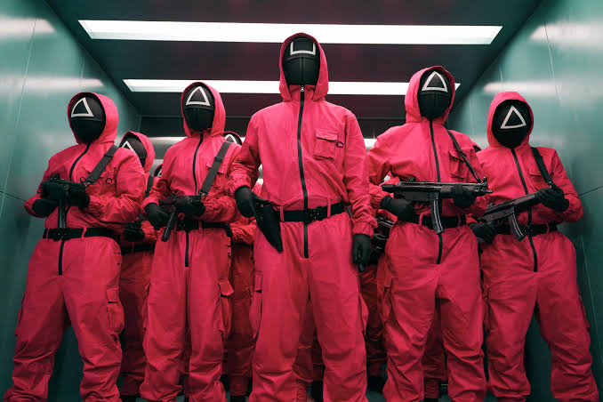

Stranger Things
Categoría: Ciencia Ficción / Fantasía
Actores principales: Millie Bobby Brown, Finn Wolfhard, Winona Ryder
A raíz de la desaparición de un niño, un pueblo desvela un misterio relacionado con experimentos secretos, fuerzas aterradoras sobrenaturales y una niña muy extraña.

Merlina
Categoría: Fantasía / Misterio
Actores principales: Jenna Ortega, Catherine Zeta-Jones, Emma Myers
Inteligente, sarcástica y un poco muerta por dentro, Merlina Addams investiga una ola de asesinatos mientras hace amigos (y enemigos) en la Academia Nunca Más.

El Juego del Calamar
Categoría: Drama / Thriller
Actores principales: Lee Jung-jae, Park Hae-soo, Wi Ha-joon
Cientos de jugadores con problemas de dinero aceptan una extraña invitación a competir en juegos infantiles. El premio es tentador, pero los riesgos son mortales.

The Witcher
Categoría: Fantasía / Acción
Actores principales: Henry Cavill, Freya Allan, Anya Chalotra
Geralt de Rivia, un cazador de monstruos mutante, viaja en pos de su destino por un mundo turbulento donde las personas suelen ser más malévolas que las bestias.